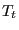
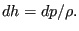
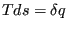
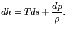
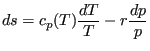
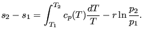

Next: Orifice Up: Theory Previous: General Contents
Before introducing the fluid section types for gases, a couple of fundamental
aerodynamic equations are introduced. For details, the reader is referred to
[59].
The thermodynamic state of a gas is usually determined by the static pressure
 , the static temperature
, the static temperature  and the density . For an ideal gas (the
case considered here), they are related by
(the
ideal gas equation), where
and the density . For an ideal gas (the
case considered here), they are related by
(the
ideal gas equation), where
 is the specific gas constant.
is the specific gas constant.  only depends on the material, it does
not depend on the temperature.
only depends on the material, it does
not depend on the temperature.
The energy conservation law runs like [19]:
where D denotes the total derivative. By use of the mass conservation:
and the conservation of momentum
this equation can also be written as
![$\displaystyle \rho \frac{D[\varepsilon+v_kv_k/2]}{Dt}=(v_kt_{kl})_{,l}-(pv_k)_{,k}+\rho v_k f_k-q_{k,k}+\rho h^{\theta},$](img359.png) |
(29) |
or
where
 is the entalpy. For an ideal gas one can write
is the entalpy. For an ideal gas one can write
 ,
,  is the heat capacity at constant pressure.
is the heat capacity at constant pressure.
The total temperature  is now defined as the temperature which is obtained by slowing down the fluid to zero velocity in an adiabatic way. Using the energy equation (30), dropping the first term on the right hand side because of ideal gas conditions (no viscosity), the second term because of stationarity, the third term because of the absence of volumetric forces and the last two terms because of adiabatic conditions one obtains the relationship:
![$\displaystyle \rho \frac{D[c_p T +v_kv_k/2]}{Dt}=0,$](img364.png) |
(31) |
along a stream line (recall that the meaning of the total derivative
 is the change
of
is the change
of  following a particle), from which
following a particle), from which
| (32) |
where v is the magnitude of the velocity. The Mach number is defined by
where  is the specific heat ratio and the denominator is the speed of sound. Therefore, the
total temperature satisfies:
is the specific heat ratio and the denominator is the speed of sound. Therefore, the
total temperature satisfies:
 |
(34) |
The total pressure is defined as the pressure which is attained by slowing
down the fluid flow in an isentropic way, i.e. a reversible adiabatic way. An
ideal gas is isentropic if
 is constant, which leads
to the relationship
is constant, which leads
to the relationship
 |
(35) |
and consequently to
| (36) |
Substituting the definition of mass flow
 , where
, where  is the
cross section of the fluid channel, in the definition of the Mach number (and
using the ideal gas equation to substitute ) leads
to
is the
cross section of the fluid channel, in the definition of the Mach number (and
using the ideal gas equation to substitute ) leads
to
 |
(37) |
Expressing the pressure and temperature as a function of the total pressure and total temperature, respectively, finally leads to
This is the general gas equation, which applies to all types of flow for ideal gases. The left hand side is called the corrected flow. The right hand side exhibits a maximum for , i.e. sonic conditions.
It is further possible to derive general statements for isentropic flow
through network elements. Isentropic flow is reversible adiabatic by
definition. Due to the adiabatic conditions the total enthalpy
 is constant or
is constant or
The first law of thermodynamics (conservation of energy) specifies that
| (40) |
or, because of the adiabatic and reversible conditions
| (41) |
Since the enthalpy
 , one further obtains
, one further obtains
|  | (42) |
Substituting this in the equation we started from leads to:
| (43) |
The continuity equation through a network element with cross section  ,
,
 constant can be written in the following differential form:
constant can be written in the following differential form:
or, with the equation above
 |
(45) |
which leads to
 |
(46) |
Since
 is the speed of sound (use the
isentropic relation
is the speed of sound (use the
isentropic relation
 and the ideal gas equation
to arrive at
and the ideal gas equation
to arrive at
 ), one arives at:
), one arives at:
 |
(47) |
Therefore, for subsonic network flow an increasing cross section leads to a decreasing velocity and an increasing pressure, whereas a decreasing cross section leads to an increasing velocity and a decreasing pressure. This is similar to what happens for incompressible flow in a tube.
For supersonic flow an increasing cross section leads to an increasing velocity and a decreasing pressure whereas a decreasing cross section leads to a decreasing velocity and an increasing pressure.
Sonic conditions can only occur if  , in reality this corresponds to a
minimum of the cross section. Therefore, if we assume that the network
elements are characterized by a uniformly increasing or decreasing cross
section sonic conditions can only occur at the end nodes. This is important
information for the derivation of the specific network element equations.
, in reality this corresponds to a
minimum of the cross section. Therefore, if we assume that the network
elements are characterized by a uniformly increasing or decreasing cross
section sonic conditions can only occur at the end nodes. This is important
information for the derivation of the specific network element equations.
Using the definition of entropy per unit mass s satisfying  and the definition of enthalpy the first law of thermodynamics for reversible processes runs like
|  | (48) |
Therefore
 |
(49) |
For an ideal gas
 and and consequently
and and consequently
|  | (50) |
or
|  | (51) |
Since all variables in the above equation are state variables, it also applies to irreversible processes. If the specific heat is temperature independent one obtains
linking the entropy difference between two states to the temperature and pressure difference.
Typical material properties needed for a gas network are the specific gas
constant  (*SPECIFIC GAS CONSTANT card), the
heat capacity at constant pressure
(*SPECIFIC GAS CONSTANT card), the
heat capacity at constant pressure  and the dynamic viscosity
and the dynamic viscosity  (both
temperature dependent and to be specified with the FLUID
CONSTANTS card).
(both
temperature dependent and to be specified with the FLUID
CONSTANTS card).
A special case is the purely thermal gas network. This applies if:
A network element is characterized by a type of fluid section. It has to be specified on the *FLUID SECTION card unless the analysis is a pure thermomechanical calculation. For gases, several types are available. At the start of the description of each type the main properties are summarized: “adiabatic” means that no heat is exchanged within the element; “isentropic” refers to constant entropy, i.e. flow without losses; “symmetric” means that the same relations apply for reversed flow; “directional” means that the flow is not allowed to be reversed.


![$\displaystyle \rho \frac{D[h+v_kv_k/2]}{Dt}=(v_kt_{kl})_{,l}+\frac{\partial p}{\partial t}+\rho v_k f_k-q_{k,k}+\rho h^{\theta},$](img360.png)